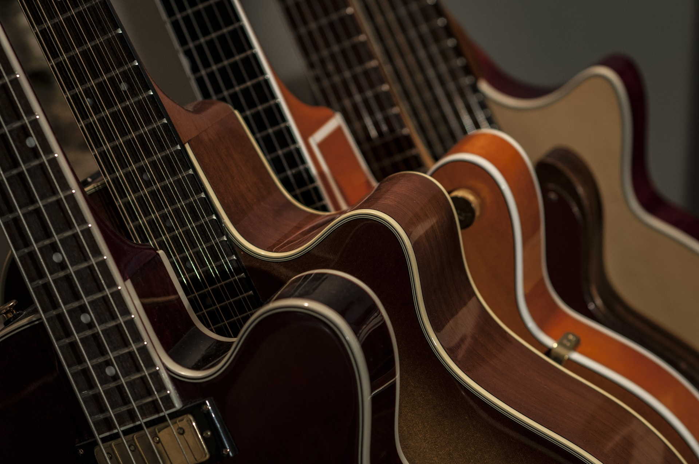

About Us!

Founded in 20XX, Bass Yourself Music is a collection of people who not only love music, but also want to help others learn to enjoy and express their passion in music as well.
From the beginning BYM held a focus on helping those who were interested learn how to play a variety of stringed instruments. Including Bass guitar, Electric and Accoustic guitar, and even additional instruments such as ukulele. Since then we've expanded to including even more stringed instruments as well as lesson opportunities for piano, percussion, and more.
With recent world events taking their toll on a lot of things, we did not back down. Instead we started offering video call lessons that people could use. A practice we continue to use for those interested as it just brings even more opportunity to those that want to learn music. Because in the end that just matches our goal: "Get everyone interested in music, learning music."
Find us at: 675 S. 32nd St. - Springfield, NE 68009
or contact us at our e-mail or social media accounts linked below!